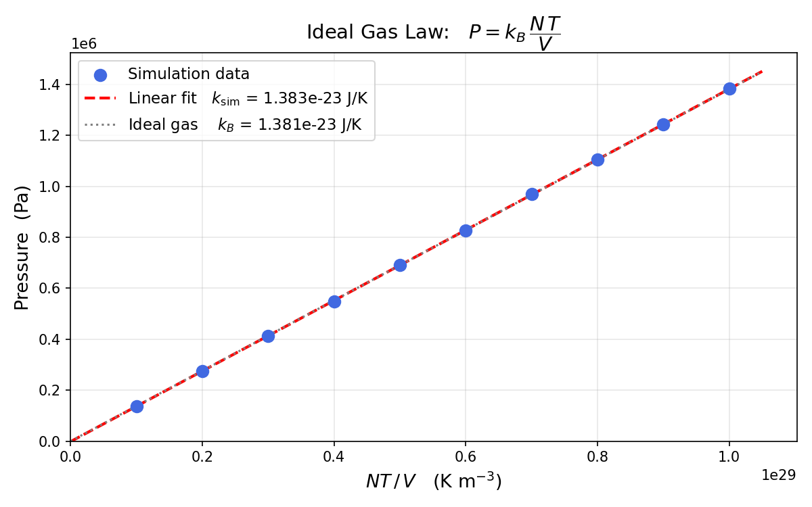
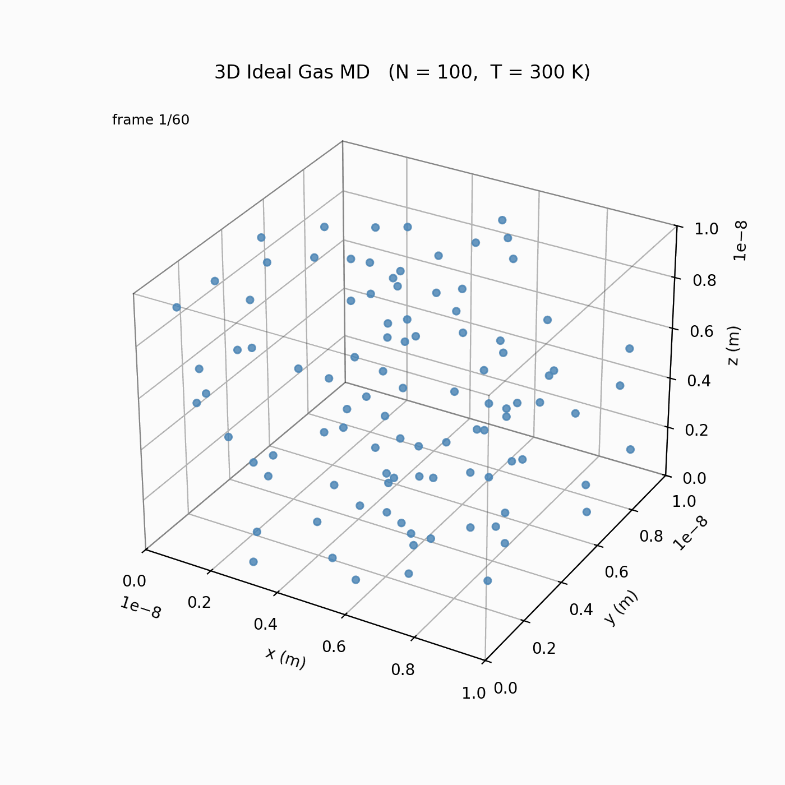

Introduction
The Ideal Gas Law is one of the most fundamental relationships in thermodynamics. It connects four macroscopic quantities — pressure, volume, number of particles, and temperature — into a single compact equation:
While the law can be derived analytically from kinetic theory, this project takes a computational approach: simulate individual gas molecules at the microscopic level, and observe whether the macroscopic Ideal Gas Law emerges naturally from the statistics of many-particle motion.
Molecular Dynamics (MD) simulation is a widely used technique in physics, chemistry, and materials science. It integrates Newton's equations of motion for a large number of particles over time and allows researchers to predict thermodynamic properties from interatomic forces. In this simplified model we use elastic wall collisions and ignore inter-particle interactions, which is exactly the textbook "ideal gas" assumption.
Goals
-
1
Build a physically accurate simulation engine — implement Newton kinematics and perfectly elastic wall reflections in 3D using NumPy vectorisation for performance.
-
2
Initialise velocities from the Maxwell-Boltzmann distribution — correctly sample particle speeds for any given temperature T, with zero net momentum and exact kinetic-energy matching.
-
3
Measure pressure computationally — use the impulse method to accumulate wall momentum transfers over the production window and convert to pressure in Pascals.
-
4
Verify the Ideal Gas Law — sweep temperature from 100 K to 1 000 K, plot P vs NT/V, and compare the fitted slope to the known Boltzmann constant kB.
-
5
Produce visual deliverables — generate a 3D animated GIF of particle motion and a publication-style scatter plot with a linear fit.
System Parameters
The simulation represents argon-like particles (mass ≈ 40 atomic mass units) confined inside a cubic box. All quantities are in SI units.
How the Simulation was Created
The simulation is written as a single Python script (ideal_gas_md.py)
structured in four sequential parts.
Part I — Velocity Initialisation (Maxwell-Boltzmann)
Particle positions are placed uniformly at random inside the box. Velocities are drawn so they match the Maxwell-Boltzmann speed distribution for a given temperature T. This requires three steps to avoid physical artefacts:
-
1
Random sampling — each velocity component is drawn from a Gaussian with standard deviation σ = √(kBT / m).
-
2
Zero net momentum — subtract the mean velocity across all particles so the gas centre-of-mass does not drift.v_i ← v_i − (1/N) Σ v_j
-
3
Temperature rescaling — multiply all velocities by λ = √(T_target / T_current) so the ensemble's kinetic energy matches the target temperature exactly.(3/2) k_B T = (1/2) m ⟨v²⟩ → T = m⟨v²⟩ / 3k_B
Part II — Simulation Engine (Kinematics + Boundaries)
Each time step advances all N particles simultaneously using NumPy array operations, making the loop fast enough to run thousands of steps in seconds.
After the position update, particles that have crossed any wall face are detected via a boolean mask. Their perpendicular velocity component is reversed (elastic collision), and their position is reflected back into the box. The momentum impulse delivered to the wall is recorded:
No inter-particle forces are computed; the particles pass through each other. This is the core assumption of the ideal gas model and avoids the O(N²) cost of pair interactions.
Part III — Pressure from Impulse Accumulation
Pressure is the average force per unit area on the walls. Rather than computing instantaneous forces, the simulation accumulates all impulses over the 3 000-step production window and divides by the total surface area and elapsed time:
Using 500 equilibration steps first ensures the initial random positions have relaxed before pressure measurements begin.
Part IV — Temperature Sweep and Linear Fit
The full pipeline (initialise → equilibrate → measure) is repeated independently at ten temperatures: 100, 200, 300, …, 1000 K. With V and N fixed, the ideal gas law predicts P ∝ T with slope kB = N/V. A linear regression of P vs NT/V recovers the simulation's effective Boltzmann constant from the slope.
Results
| Target T (K) | Measured T (K) | Pressure (Pa) | Ideal Gas Prediction (Pa) |
|---|---|---|---|
| 100 | 100.0 | 1.382 × 10⁵ | 1.381 × 10⁵ |
| 200 | 200.0 | 2.754 × 10⁵ | 2.761 × 10⁵ |
| 300 | 300.0 | 4.132 × 10⁵ | 4.142 × 10⁵ |
| 400 | 400.0 | 5.493 × 10⁵ | 5.522 × 10⁵ |
| 500 | 500.0 | 6.904 × 10⁵ | 6.903 × 10⁵ |
| 600 | 600.0 | 8.273 × 10⁵ | 8.284 × 10⁵ |
| 700 | 700.0 | 9.684 × 10⁵ | 9.664 × 10⁵ |
| 800 | 800.0 | 1.105 × 10⁶ | 1.104 × 10⁶ |
| 900 | 900.0 | 1.244 × 10⁶ | 1.245 × 10⁶ |
| 1000 | 1000.0 | 1.382 × 10⁶ | 1.381 × 10⁶ |
The measured pressure grows linearly with temperature across the entire range with near-perfect fidelity. A linear fit of P against NT/V recovers:


Conclusion
This project successfully demonstrated that the Ideal Gas Law emerges naturally from simulating 100 individual molecules obeying only Newton's laws of motion and elastic wall reflections — with no inter-particle forces, no explicit thermodynamic assumptions, and no analytical shortcuts.
Sweeping temperature from 100 K to 1 000 K while holding N and V constant produced pressures that increased linearly with temperature at every data point. A linear regression of the ten (NT/V, P) pairs recovered a simulation Boltzmann constant of k_sim = 1.3834 × 10⁻²³ J/K, compared to the NIST-accepted value of k_B = 1.3806 × 10⁻²³ J/K — a relative error of only 0.20 %.
The remaining deviation is due to finite-sample statistics: with N = 100 particles and 3 000 production steps, random fluctuations in wall-hit timing introduce a small but nonzero noise floor. Running more particles (N = 1 000) or longer production windows would reduce this error further.
Beyond numerical accuracy, the project illustrates a key insight in statistical physics: macroscopic laws are not axioms imposed on top of microscopic physics — they are consequences of it. The temperature, pressure, and ideal gas constant all arise automatically from a straightforward application of Newton's second law to many particles. This bridge between the microscopic and macroscopic is what makes Molecular Dynamics a powerful tool in modern computational science.